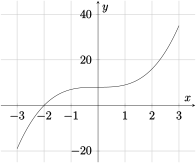
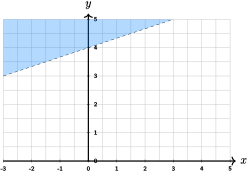
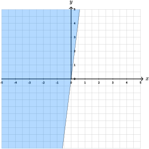

Section 3.3 Curve Sketching
In this section we will review methods for obtaining a rough sketch of the graph of a function, that is, the set of points \((x, y)\text{,}\) where \(y = f(x)\text{.}\) We will focus on polynomials, but the same methods apply to roughly sketching the graph of any function. There are three basic tools:
knowing the basic shape of the function whose graph is being sketched;
understanding how graphs are shifted or stretched in the plane by adding or multiplying by constants;
plotting some points.
Precisely sketching the graph of a function is a topic of study in calculus that builds on these tools.
The easiest function to graph is a linear function, which corresponds to the set of points \((x, y)\) where \(y = mx + b\text{.}\) The graph of a linear function is a line. Since two points determine a line, all that's needed is to pick two different \(x\) values, compute the corresponding \(y\) values, and draw a line through the two points just obtained.
A quadratic function is a function \(f(x) = ax^2+bx+c\text{,}\) where \(a \neq 0\) (otherwise the function is linear, not quadratic). The graph of a quadratic function is a parabola. Figure 3.3.1 shows the graph of \(y = x^2\) on the left and \(y = -x^2\) on the right. The important point is that when \(a > 0\) then the graph of \(y = f(x)\) is shaped like the graph of \(y = x^2\text{,}\) and when \(a \lt 0\) it is shaped like the graph of \(y = -x^2\text{.}\)

It is a fact that the graph of any polynomial of even degree is roughly parabolic in shape, and opens upwards when the leading coefficient is positive and downwards when the leading coefficient is negative. In the "middle" the graph may wiggle around some depending on the number of different roots the function has (if the degree is \(n\text{,}\) then there are at most \(n\) real roots; if the degree is even there could be no real roots). Roughly speaking, each time the function crosses the \(x\)-axis leads to a "hump" in its graph. For example, the graphs \(y=(x-2)(x-1)(x+1)(x+2)\) and \(y=-(x-2)(x-1)(x+1)(x+2)\) are shown below.

A cubic function is a function \(f(x) = ax^3+bx^2+cx + d\text{,}\) where \(a \neq 0\text{.}\) The graph of \(y = x^3\) is shown below. The graph of \(y = -x^3\) is its mirror image across the \(x\)-axis.

It is a fact that the graph of any polynomial of odd degree is roughly the same shape as the graph of \(x^3\text{.}\) When the leading coefficient is positive it looks like the graph of \(y = x^3\text{,}\) and when the leading coefficient is negative it looks like the graph of \(y = -x^3\text{.}\) It is a fact that a polynomial of odd degree always has a real root.
Now that we've covered the basic shapes of the graphs of polynomials, we review how graphs can be transformed.
-
If \(c\) is a constant, then the graph of \(y = f(x) + c\) is the same as the graph of \(y = f(x)\) except shifted by \(c\) units (up if \(c > 0\) and down if \(c \lt 0\)). For example, the graph of \(y = x^3 + 8\) is shown below.
Figure 3.3.4. -
If \(h\) is a constant, then the graph of \(y = f(x - h)\) is the same as the graph of \(y = f(x)\) except shifted by \(h\) units (right if \(h > 0\) and left if \(h \lt 0\)). For example, the graph of \(y = (x+2)^2\) is shown below.

Figure 3.3.5. -
If \(s\) is a constant, then the graph of \(y = s\cdot f(x)\) is the same as the graph of \(f(x)\text{,}\) except the \(y\) values are scaled by the amount \(s\text{.}\) For example, in the graph of \(y = 2 \cdot x^2\) shown below, for the same \(x\) value, the \(y\) values are twice as large as for \(y = x^2\text{;}\) in this sense the graph increases twice as fast.
Figure 3.3.6. -
If \(d\) is a constant, then the graph of \(y = f(d \cdot x)\) is the same as the graph of \(y = f(x)\) except compressed (left to right) by a factor of \(d\text{.}\) For example, the graph of \(y = (2x)^3\) is the same as the graph of \(y = x^3\) except that it is compressed, and therefore grows more quickly.
Figure 3.3.7.
Example 3.3.8. Sketching a Cubic Curve.
Sketch the graph of \(y = 2(x-1)^3 - 4\text{.}\)
Using the three bullet points above, this is the graph of \(y = x^3\) shifted right by 1 unit, down by 4 units, and scaled by a factor of 2. The sketch can be made a bit more accurate by identifying several points on the curve and then drawing a smooth curve or the correct shape through them.
Example 3.3.8 illustrates that making a table of a few values of a function can help with sketching its graph. Since the graph of a function has a "hump" between roots, it can be useful to identify the roots; the function value at those points is easy to find — it is zero.
When the function is quadratic, the quadratic formula can be used to find the roots. if there are any. And once the roots are known, the \(x\)-coordinate of vertex (the point where the function achieves its minimum or maximum value) is midway between them.
Example 3.3.10. Sketching a Quadratic Curve.
Sketch the graph of \(f(x) = x^2-8x+12\text{.}\)
By the quadratic formula (or by factoring), we see that the roots of \(f(x)\) are \(2\) and \(6\text{.}\) Hence the graph of \(y = f(x)\) is a parabola that opens upwards, crosses the \(x\)-axis at \(2\) and \(6\text{,}\) and has vertex with \(x\)-coordinate \(4\) (and \(y\)-coordinate \(-4\text{,}\) by computing \(f(-4)\)). We can get more information by computing that \(f(3) = -3\text{.,}\) and noting that since a parabola is symmetric about the vertical line through the vertex, \(f(5) = -3\) too. This gives us enough points to make a rough sketch of the curve.
We close this section by applying the techniques described above to sketch the graph of a function which is not a polynomial.
Example 3.3.12. Sketching a Non-Polynomial Curve.
Sketch the graph of \(f(x) = \frac{1}{x}\text{.}\)
First, notice that the domain of \(f\) is the set of all real numbers except zero. Second, notice that \(f\) has no real roots because the equation \(\frac{1}{x} = 0\) has no solution. Hence the graph of \(y = f(x)\) does not meet the \(x\)-axis. It also helps to notice that \(f(-x) = -f(x)\text{,}\) because \(\frac{1}{-x} = -\frac{1}{x}\text{,}\) so that the graph of the function when \(x \lt 0\) are the negatives of the corresponding positive \(x\) values.
Next, we can make a table of values for \(y = f(x)\text{:}\)
This helps, but it would be useful to know what happens to \(f(x)\) as \(x\) gets close to 0. If \(x\) is positive and close to zero, then \(f(x)\) is very large and positive. If \(x\) is negative and close to zero, then \(f(x)\) is negative and very large in absolute value. This can be confirmed by evaluating \(f\) at a few more points like \(0.5, 0.25\) and \(0.1\text{.}\) The information gathered leads to the following sketch.
Exercises Practice Problems
Sketch the graph of the following functions and describe any transformations:
1.
\(f(x)=x^2-5x-14\)
2.
\(g(x)=\frac{1}{3}x^2+5\)This is the graph of \(y=x^2\) shifted up by 5 units, and scaled by a factor of \(\frac{1}{3}\text{.}\)
3.
\(h(x)=\frac{1}{x}-1\)This is the graph of \(y=\frac{1}{x}\) is shifted down by 1 units.

4.
\(f(x)=(x-2)^4\)This is the graph of \(y = x^4\) shifted right by 2 units,
5.
\(g(x)=4(x+2)^2-3\)This is the graph of \(y=x^2\) shifted left by 2 units, shifted down by 3 units, and scaled by a factor of 4.